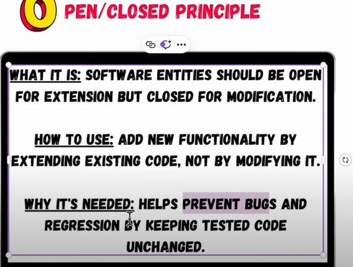

The Open-Closed Principle (OCP) is one of the SOLID principles,
stating that software entities (like classes, modules, functions)
should be open for extension but closed for modification.
This means you should be able to add new functionality
without changing existing code, which reduces the risk of introducing
bugs in tested code and makes maintenance easier.
